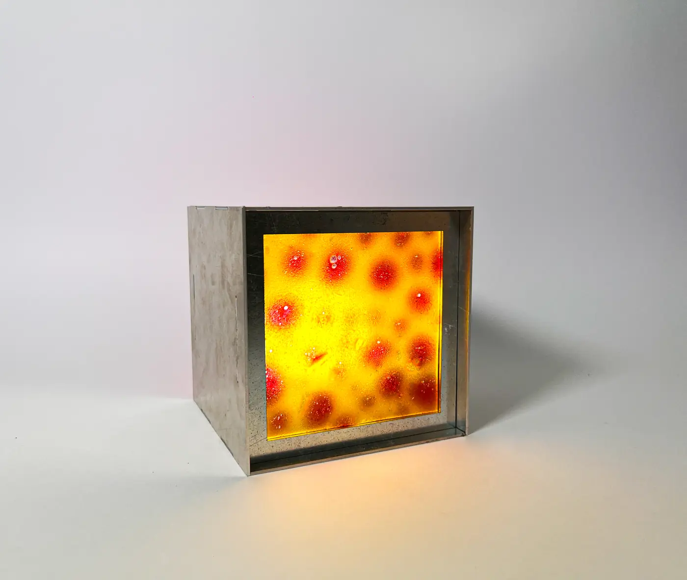
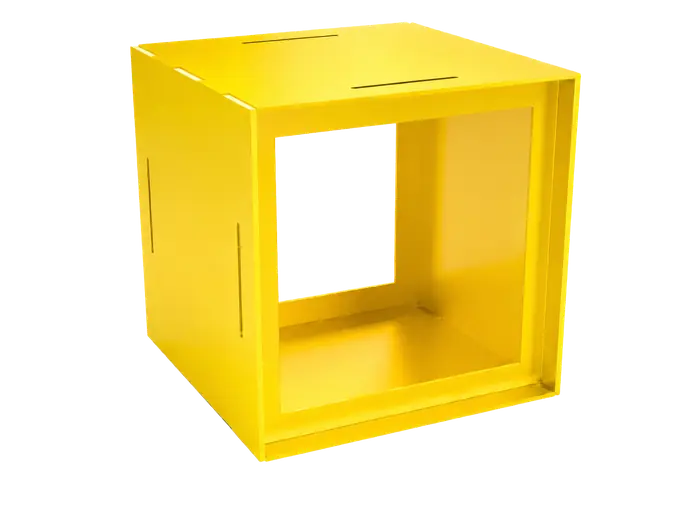
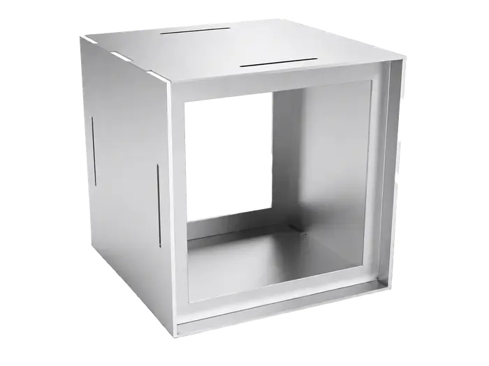
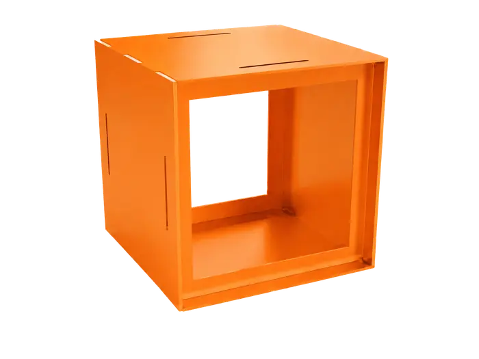
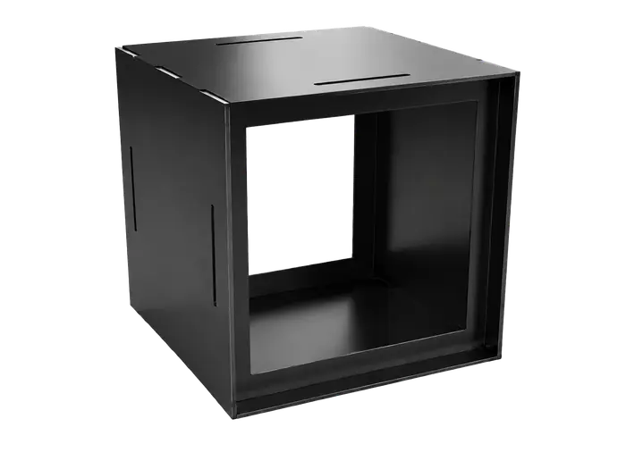

Gelatina
- Asciuga in circa 24 ore
- Di origine animale
- Odore acre
Scartata
Dentro c'è la struttura della lampada e tutto il necessario per fare la tua bioplastica, con ingredienti che trovi in cucina.

Il design non serve solo a creare oggetti. Serve ad avvicinare le persone ai temi che contano: come la sostenibilità.
LOOP nasce dalla voglia di unire design, scienza e creatività in un kit pensato per bambini e ragazzi: si fa la bioplastica con le proprie mani, la si monta nella lampada e la si accende.
La lampada
La struttura non deve competere con la bioplastica: il suo compito è farla vedere, illuminarla, valorizzarla. Per questo è la forma più semplice possibile.

Lastre in alluminio tagliate al laser, senza viti né attrezzi. Arrivano piatte nella scatola e si montano a mano.
La lampadina ha una base magnetica: si appoggia sulla base in ferro e resta ferma da sola. Si comanda con il telecomando.
Due lati sono cornici con calamite: la bioplastica si appoggia sopra e una cornice in ferro la tiene ferma. Basta sollevarla per cambiarla.

Due lati, due luci
Girando la lampada scegli quale lato tenere davanti a te e quale rivolgere verso la stanza.

La bioplastica in controluce
La luce la attraversa e ne rivela colore, texture, bolle d'aria e venature dei coloranti naturali.

Il riflesso sulla stanza
Dall'altro lato la luce colorata tinge il muro e le superfici intorno, senza che la fonte si veda.
Cinque colori
Le soluzioni costruttive restano a vista e il montaggio diventa parte dell'estetica. La struttura è verniciata a polvere in cinque varianti.

Giallo

Alluminio

Arancione

Bianco

Nero
Impilabili, modulari, uniche


Apri la scatola
Tutto per la bioplastica
Otto lastre piatte
Ed ecco la tua lampada
Librettoistruzioni
Telecomando
Lampadinamagnetica
4 coloranti naturalicurcuma, barbabietola, spirulina blu e verde
Lati in alluminio
Lati a cornicecon calamite
Coperchio
Basein ferro
Cornici in ferro
Kit per creare la tua lampada con bioplastiche

La bioplastica
Un materiale fatto con ingredienti naturali, che si cuoce in un pentolino, si cola in uno stampo e si lascia asciugare. Ho provato quattro basi diverse prima di scegliere quella giusta per il kit.
Scartata
Scartata
Scartata
Scelta per il kit ✓
Niente coloranti in boccetta: una radice o un ortaggio che si trovano in cucina fanno capire, molto meglio di un'etichetta, da dove viene il colore.
Le ricette
Le ricette a base di pectina che ho testato per il kit, con dosi, procedimento e quello che ho osservato.
Sciogli la pectina nell'acqua mescolando con energia, per evitare i grumi.
Aggiungi il colorante naturale e la glicerina, che rende il materiale flessibile.
Cuoci a fuoco medio-basso, mescolando, finché il composto si addensa.
Versa nello stampo e lascia asciugare circa 24 ore.
 Base
BaseDopo 24 ore è asciutta, lucida e trasparente. Mescolando con più energia i grumi spariscono quasi del tutto. In una settimana il diametro passa da 8,8 a 8,2 cm: la pectina è la base più stabile.
 Giallo
GialloUn giallo trasparente e luminoso, bellissimo in controluce. Più curcuma dà un giallo più scuro. Si può arrotolare e piegare e torna da sola alla sua forma.
 Rosso
RossoUn rosso acceso e brillante che resta vivo anche dopo una settimana. Asciuga piatta, senza ritiri né curvature, ed è molto flessibile.
 Verde
VerdeUn verde intenso: in controluce si vedono i piccoli frammenti di spirulina, che danno una texture molto particolare. Si può stringere e piegare senza crepe.
 Azzurro
AzzurroIn cottura il blu sbiadisce e resta solo nei grumi al centro. Da sola non tiene il colore, ma mescolata agli altri pigmenti è perfetta per ottenere i colori secondari.
In tutto ho sperimentato più di 60 campioni tra gelatina, agar-agar, amido di mais e pectina.
Il progetto
“Perché non unire il design alla creazione delle bioplastiche, trasformando questa esperienza in qualcosa che anche i più giovani possano vivere?”
Sperimentando con le bioplastiche, tra ingredienti, ricette e trasformazioni inaspettate della materia, ho ritrovato una sensazione che pensavo appartenesse solo all'infanzia: la soddisfazione di creare qualcosa con le proprie mani. Mi sono tornati in mente i kit creativi con cui sono cresciuta, quelli per costruire, mescolare e assemblare.
Da qui è nato LOOP: un kit educativo che unisce design, scienza e creatività. Avvicina i più giovani al design attraverso la sperimentazione diretta con i materiali e li rende consapevoli dell'impatto della plastica, facendoli diventare protagonisti di una trasformazione responsabile.
La lampada non è un punto di arrivo, ma di partenza: un invito a continuare a sperimentare nuove ricette, nuovi colori, nuove possibilità.
Mobili in metallo con un sistema costruttivo a incastro, senza viti, preciso come un gesto progettato.
Arredi in alluminio tagliato al laser che viaggiano piatti e si montano a mano: l'idea del flat packaging.
Viti a vista e alluminio piegato: il modo in cui un oggetto è tenuto insieme diventa parte del suo aspetto.